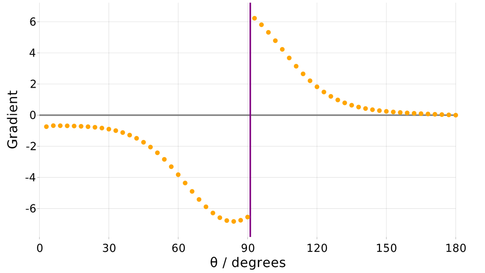

Differentiable simulation with Molly
There are still many rough edges when taking gradients through simulations. Please open an issue if you run into an error and remember the golden rule of AD: check your gradients against finite differencing if you want to make sure they are correct.
There are currently issues with running differentiable simulations on the GPU and on the CPU in certain cases. Hopefully these will be resolved soon.
In the last few years, the deep learning revolution has broadened to include the paradigm of differentiable programming. The concept of using automatic differentiation (AD) to obtain exact gradients through physical simulations has many interesting applications, including parameterising force fields and training neural networks to describe atomic potentials.
There are some projects that explore differentiable molecular simulations - see Related software. However Julia provides a strong suite of AD tools, with Enzyme.jl allowing source-to-source transformations for much of the language. With Molly you can use the power of Enzyme to obtain gradients through molecular simulations, even in the presence of complex interactions such as implicit solvation and stochasticity such as Langevin dynamics or the Andersen thermostat. Reverse and forward mode AD can be used on the CPU with multithreading and on the GPU; performance is typically within an order of magnitude of the primal run. Pairwise, specific and general interactions work, along with neighbor lists, and the same abstractions for running simulations are used as in the main package.
Differentiable simulation does not currently work with units and some components of the package. This is mentioned in the relevant docstrings. It is memory intensive on the GPU so using gradient checkpointing, e.g. with Checkpointing.jl, will likely be required for larger simulations.
Pairwise interactions
First, we show how taking gradients through a simulation can be used to optimise an atom property in a Lennard-Jones fluid. In this type of simulation each atom has a σ value that determines how close it likes to get to other atoms. We are going to find the σ value that results in a desired distance of each atom to its closest neighbor. First we need a function to obtain the mean distance of each atom to its closest neighbor:
using Molly, Statistics
function mean_min_separation(coords, boundary)
min_seps = Float64[]
for i in eachindex(coords)
min_sq_sep = 100.0
for j in eachindex(coords)
if i != j
sq_dist = sum(abs2, vector(coords[i], coords[j], boundary))
min_sq_sep = min(sq_dist, min_sq_sep)
end
end
push!(min_seps, sqrt(min_sq_sep))
end
return mean(min_seps)
endNow we can set up and run the simulation in a similar way to that described in the Molly documentation. The difference is that we wrap the simulation in a loss function. This returns a single value that we want to obtain gradients with respect to, in this case the difference between the value of the above function at the end of the simulation and a target distance.
dist_true = 0.5
scale_σ_to_dist = 2 ^ (1 / 6)
σtrue = dist_true / scale_σ_to_dist
n_atoms = 50
n_steps = 500
atom_mass = 10.0
boundary = CubicBoundary(3.0)
temp = 1.0
simulator = VelocityVerlet(
dt=0.02,
coupling=RescaleThermostat(temp),
)
coords = place_atoms(n_atoms, boundary; min_dist=0.6)
velocities = [random_velocity(atom_mass, temp) for i in 1:n_atoms]
lj = LennardJones(cutoff=DistanceCutoff(1.5), use_neighbors=true)
pairwise_inters = (lj,)
neighbor_finder = DistanceNeighborFinder(
eligible=trues(n_atoms, n_atoms),
n_steps=10,
dist_cutoff=1.8,
)
function loss(σ, coords, velocities, boundary, pairwise_inters,
neighbor_finder, simulator, n_steps, n_atoms, atom_mass, dist_true)
atoms = [Atom(i, 1, atom_mass, 0.0, σ, 0.2) for i in 1:n_atoms]
sys = System(
atoms=atoms,
coords=coords,
boundary=boundary,
velocities=velocities,
pairwise_inters=pairwise_inters,
neighbor_finder=neighbor_finder,
force_units=NoUnits,
energy_units=NoUnits,
)
simulate!(sys, simulator, n_steps)
mms_end = mean_min_separation(sys.coords, boundary)
loss_val = abs(mms_end - dist_true)
print(
"σ ", round(σ; digits=3), " | Mean min sep expected ", round(σ * (2 ^ (1 / 6)); digits=3),
" | Mean min sep end ", round(mms_end; digits=3), " | Loss ", round(loss_val; digits=3),
" | ",
)
return loss_val
endWe can obtain the gradient of loss with respect to the atom property σ using Enzyme.
using Enzyme
const_args = [
Const(boundary), Const(pairwise_inters), Const(neighbor_finder),
Const(simulator), Const(n_steps), Const(n_atoms),
Const(atom_mass), Const(dist_true),
]
grad_enzyme = autodiff(
set_runtime_activity(Reverse), loss, Active, Active(σtrue),
Duplicated(coords, zero(coords)), Duplicated(velocities, zero(velocities)),
const_args...,
)[1][1]This gradient can be used in a training loop to optimise σ, starting from an arbitrary value.
function train()
σlearn = 0.60 / scale_σ_to_dist
n_epochs = 15
for epoch_n in 1:n_epochs
print("Epoch ", epoch_n, " | ")
coords = place_atoms(n_atoms, boundary; min_dist=0.6)
velocities = [random_velocity(atom_mass, temp) for i in 1:n_atoms]
grad = autodiff(
set_runtime_activity(Reverse), loss, Active, Active(σlearn),
Duplicated(coords, zero(coords)), Duplicated(velocities, zero(velocities)),
const_args...,
)[1][1]
println("Grad ", round(grad; digits=3))
σlearn -= grad * 1e-2
end
end
train()Epoch 1 | σ 0.535 | Mean min sep expected 0.6 | Mean min sep end 0.59 | Loss 0.09 | Grad 1.495
Epoch 2 | σ 0.52 | Mean min sep expected 0.583 | Mean min sep end 0.577 | Loss 0.077 | Grad 0.721
Epoch 3 | σ 0.512 | Mean min sep expected 0.575 | Mean min sep end 0.562 | Loss 0.062 | Grad 1.066
Epoch 4 | σ 0.502 | Mean min sep expected 0.563 | Mean min sep end 0.553 | Loss 0.053 | Grad 0.435
Epoch 5 | σ 0.497 | Mean min sep expected 0.558 | Mean min sep end 0.552 | Loss 0.052 | Grad 0.398
Epoch 6 | σ 0.493 | Mean min sep expected 0.554 | Mean min sep end 0.551 | Loss 0.051 | Grad 0.318
Epoch 7 | σ 0.49 | Mean min sep expected 0.55 | Mean min sep end 0.536 | Loss 0.036 | Grad 1.291
Epoch 8 | σ 0.477 | Mean min sep expected 0.536 | Mean min sep end 0.533 | Loss 0.033 | Grad 0.257
Epoch 9 | σ 0.475 | Mean min sep expected 0.533 | Mean min sep end 0.53 | Loss 0.03 | Grad 0.539
Epoch 10 | σ 0.469 | Mean min sep expected 0.527 | Mean min sep end 0.535 | Loss 0.035 | Grad 1.253
Epoch 11 | σ 0.457 | Mean min sep expected 0.513 | Mean min sep end 0.504 | Loss 0.004 | Grad 1.453
Epoch 12 | σ 0.442 | Mean min sep expected 0.496 | Mean min sep end 0.491 | Loss 0.009 | Grad -1.07
Epoch 13 | σ 0.453 | Mean min sep expected 0.508 | Mean min sep end 0.504 | Loss 0.004 | Grad 1.599
Epoch 14 | σ 0.437 | Mean min sep expected 0.49 | Mean min sep end 0.494 | Loss 0.006 | Grad -0.181
Epoch 15 | σ 0.439 | Mean min sep expected 0.493 | Mean min sep end 0.49 | Loss 0.01 | Grad -1.355The final value we get is 0.439, close to the theoretical value of 0.445 if all atoms have a neighbor at the minimum pairwise energy distance. The RDF looks as follows, with the purple line corresponding to the desired distance to the closest neighbor. 
To make this run on the GPU the appropriate objects should be transferred to the GPU with CuArray: coords, velocities, atoms and the eligible matrix for the neighbor finder. If using custom interactions or some built-in interactions you may need to define methods of zero and + for your interaction type.
It is common to require a loss function formed from values throughout a simulation. In this case it is recommended to split up the simulation into a set of short simulations in the loss function, each starting from the previous final coordinates and velocities. This runs an identical simulation but makes the intermediate coordinates and velocities available for use in calculating the final loss. For example, the RMSD could be calculated from the coordinates every 100 steps and added to a variable that is then divided by the number of chunks to get a loss value corresponding to the mean RMSD over the simulation.
Specific interactions
Next we look at obtaining gradients through simulations with specific interactions, e.g. bonds or angles between specified atoms. We will simulate two triatomic molecules and search for a minimum energy bond angle that gives a desired distance between the atoms at the end of the simulation.
using Molly, Enzyme, LinearAlgebra
dist_true = 1.0
n_steps = 150
atom_mass = 10.0
boundary = CubicBoundary(3.0)
temp = 0.05
coords = [
SVector(0.8, 0.75, 1.5), SVector(1.5, 0.70, 1.5), SVector(2.3, 0.75, 1.5),
SVector(0.8, 2.25, 1.5), SVector(1.5, 2.20, 1.5), SVector(2.3, 2.25, 1.5),
]
n_atoms = length(coords)
velocities = zero(coords)
atoms = [Atom(i, 1, atom_mass, 0.0, 0.0, 0.0) for i in 1:n_atoms]
simulator = VelocityVerlet(
dt=0.05,
coupling=BerendsenThermostat(temp, 0.5),
)
bonds = InteractionList2Atoms(
[1, 2, 4, 5],
[2, 3, 5, 6],
[HarmonicBond(100.0, 0.7) for _ in 1:4],
)
function loss(θ, coords, velocities, atoms, bonds, boundary, simulator, n_steps,
n_atoms, atom_mass, dist_true)
angles = InteractionList3Atoms(
[1, 4],
[2, 5],
[3, 6],
[HarmonicAngle(10.0, θ), HarmonicAngle(10.0, θ)],
)
sys = System(
atoms=atoms,
coords=coords,
boundary=boundary,
velocities=velocities,
specific_inter_lists=(bonds, angles),
force_units=NoUnits,
energy_units=NoUnits,
)
simulate!(sys, simulator, n_steps)
d1 = norm(vector(sys.coords[1], sys.coords[3], boundary))
d2 = norm(vector(sys.coords[4], sys.coords[6], boundary))
dist_end = 0.5 * (d1 + d2)
loss_val = abs(dist_end - dist_true)
print(
"θ ", round(rad2deg(θ); digits=1), "° | Final dist ", round(dist_end; digits=2),
" | Loss ", round(loss_val; digits=3), " | ",
)
return loss_val
end
const_args = [
Const(atoms), Const(bonds), Const(boundary), Const(simulator),
Const(n_steps), Const(n_atoms), Const(atom_mass), Const(dist_true),
]
function train()
θlearn = deg2rad(110.0)
n_epochs = 20
for epoch_n in 1:n_epochs
print("Epoch ", epoch_n, " | ")
grad = autodiff(
set_runtime_activity(Reverse), loss, Active, Active(θlearn),
Duplicated(copy(coords), zero(coords)), Duplicated(copy(velocities), zero(velocities)),
const_args...,
)[1][1]
println("Grad ", round(grad; digits=2))
θlearn -= grad * 0.1
end
end
train()Epoch 1 | θ 110.0° | Final dist 1.16 | Loss 0.155 | Grad 0.41
Epoch 2 | θ 107.7° | Final dist 1.14 | Loss 0.138 | Grad 0.43
Epoch 3 | θ 105.2° | Final dist 1.12 | Loss 0.119 | Grad 0.45
Epoch 4 | θ 102.6° | Final dist 1.1 | Loss 0.099 | Grad 0.47
Epoch 5 | θ 100.0° | Final dist 1.08 | Loss 0.077 | Grad 0.49
Epoch 6 | θ 97.2° | Final dist 1.05 | Loss 0.049 | Grad 0.71
Epoch 7 | θ 93.1° | Final dist 1.01 | Loss 0.012 | Grad 0.52
Epoch 8 | θ 90.1° | Final dist 0.98 | Loss 0.015 | Grad -0.54
Epoch 9 | θ 93.2° | Final dist 1.01 | Loss 0.013 | Grad 0.52
Epoch 10 | θ 90.2° | Final dist 0.99 | Loss 0.015 | Grad -0.54
Epoch 11 | θ 93.3° | Final dist 1.01 | Loss 0.014 | Grad 0.52
Epoch 12 | θ 90.3° | Final dist 0.99 | Loss 0.014 | Grad -0.54
Epoch 13 | θ 93.4° | Final dist 1.01 | Loss 0.015 | Grad 0.52
Epoch 14 | θ 90.4° | Final dist 0.99 | Loss 0.013 | Grad -0.54
Epoch 15 | θ 93.5° | Final dist 1.02 | Loss 0.016 | Grad 0.52
Epoch 16 | θ 90.5° | Final dist 0.99 | Loss 0.012 | Grad -0.54
Epoch 17 | θ 93.6° | Final dist 1.02 | Loss 0.016 | Grad 0.52
Epoch 18 | θ 90.6° | Final dist 0.99 | Loss 0.011 | Grad -0.53
Epoch 19 | θ 93.7° | Final dist 1.02 | Loss 0.017 | Grad 0.52
Epoch 20 | θ 90.7° | Final dist 0.99 | Loss 0.01 | Grad -0.53The final value we get is 90.7°, close to the theoretical value of 91.2° which can be calculated with trigonometry. The final simulation looks like this:  In the presence of other forces this value would not be so trivially obtainable. We can record the gradients for different values of
In the presence of other forces this value would not be so trivially obtainable. We can record the gradients for different values of θ:
θs = collect(0:3:180)[2:end]
grads = [autodiff(
set_runtime_activity(Reverse), loss, Active, Active(deg2rad(θ)),
Duplicated(copy(coords), zero(coords)), Duplicated(copy(velocities), zero(velocities)),
const_args...,
)[1][1] for θ in θs]The plot of these shows that the gradient has the expected sign either side of the correct value: 
Neural network potentials
Flux models can also be incorporated into simulations. Here we show a neural network in the force function, though they can also be used in other parts of the simulation. This example also shows how gradients for multiple parameters can be obtained, in this case the parameters of the neural network. The jump from single to multiple parameters is important because single parameters can be optimised using finite differencing, whereas differentiable simulation is well-placed to optimise many parameters simultaneously.
We set up three pseudo-atoms and train a network to imitate the Julia logo by moving the bottom two atoms:
using Molly
using Enzyme
using Flux
import AtomsCalculators
import GLMakie
using LinearAlgebra
model = Chain(
Dense(1, 5, relu),
Dense(5, 1, tanh),
)
struct NNBonds{T}
model::T
end
function AtomsCalculators.forces(sys, inter::NNBonds; kwargs...)
vec_ij = vector(sys.coords[1], sys.coords[3], sys.boundary)
dist = norm(vec_ij)
f = inter.model([dist])[1] * normalize(vec_ij)
fs = [f, zero(f), -f]
return fs
end
dist_true = 1.0f0
n_steps = 400
boundary = CubicBoundary(5.0f0)
temp = 0.01f0
coords = [
SVector(2.3f0, 2.07f0, 0.0f0),
SVector(2.5f0, 2.93f0, 0.0f0),
SVector(2.7f0, 2.07f0, 0.0f0),
]
n_atoms = length(coords)
velocities = zero(coords)
atoms = [Atom(i, 1, 10.0f0, 0.0f0, 0.0f0, 0.0f0) for i in 1:n_atoms]
simulator = VelocityVerlet(
dt=0.02f0,
coupling=BerendsenThermostat(temp, 0.5f0),
)
function loss(model, coords, velocities, atoms, boundary, simulator, n_steps, dist_true)
loggers = (coords=CoordinatesLogger(Float32, 10),)
general_inters = (NNBonds(model),)
sys = System(
atoms=atoms,
coords=coords,
boundary=boundary,
velocities=velocities,
general_inters=general_inters,
loggers=loggers,
force_units=NoUnits,
energy_units=NoUnits,
)
simulate!(sys, simulator, n_steps)
dist_end = (norm(vector(sys.coords[1], sys.coords[2], boundary)) +
norm(vector(sys.coords[2], sys.coords[3], boundary)) +
norm(vector(sys.coords[3], sys.coords[1], boundary))) / 3
loss_val = abs(dist_end - dist_true)
println("Dist end ", round(dist_end; digits=3), " | Loss ", round(loss_val; digits=3))
visualize(sys.loggers.coords, boundary, "sim.mp4"; show_boundary=false)
return loss_val
endBefore training the result looks like this: 
function train()
model = Chain(
Dense(1, 5, relu),
Dense(5, 1, tanh),
)
opt = Optimisers.setup(ADAM(0.02, (0.9, 0.999)), model)
n_epochs = 20
for epoch_n in 1:n_epochs
print("Epoch ", epoch_n, " | ")
d_model = Flux.fmap(model) do x
x isa Array ? zero(x) : x
end
autodiff(
set_runtime_activity(Reverse), loss, Active, Duplicated(model, d_model),
Duplicated(copy(coords), zero(coords)), Duplicated(copy(velocities), zero(velocities)),
Const(atoms), Const(boundary), Const(simulator), Const(n_steps), Const(dist_true),
)
opt, model = Optimisers.update!(opt, model, d_model)
end
end
train()Epoch 1 | Dist end 0.821 | Loss 0.179
Epoch 2 | Dist end 0.859 | Loss 0.141
Epoch 3 | Dist end 0.902 | Loss 0.098
Epoch 4 | Dist end 0.948 | Loss 0.052
Epoch 5 | Dist end 0.996 | Loss 0.004
Epoch 6 | Dist end 1.044 | Loss 0.044
Epoch 7 | Dist end 1.069 | Loss 0.069
Epoch 8 | Dist end 1.08 | Loss 0.08
Epoch 9 | Dist end 1.081 | Loss 0.081
Epoch 10 | Dist end 1.073 | Loss 0.073
Epoch 11 | Dist end 1.06 | Loss 0.06
Epoch 12 | Dist end 1.042 | Loss 0.042
Epoch 13 | Dist end 1.019 | Loss 0.019
Epoch 14 | Dist end 0.994 | Loss 0.006
Epoch 15 | Dist end 0.978 | Loss 0.022
Epoch 16 | Dist end 0.97 | Loss 0.03
Epoch 17 | Dist end 0.968 | Loss 0.032
Epoch 18 | Dist end 0.973 | Loss 0.027
Epoch 19 | Dist end 0.982 | Loss 0.018
Epoch 20 | Dist end 0.995 | Loss 0.005After training it looks much better:  You could replace the simple network here with a much more complicated model and it would theoretically be able to train, even if it might prove practically difficult (see discussion below).
You could replace the simple network here with a much more complicated model and it would theoretically be able to train, even if it might prove practically difficult (see discussion below).
Biomolecular force fields
Molly was used to train the GB99dms force field for implicit solvent molecular dynamics of proteins. This involved doing differentiable simulations of one million steps with a loss function based on the residue-residue distance match to explicit solvent simulations. The code is available.
Reversible simulation
Molly.jl was also used to code reversible simulation, an extension of differentiable simulation with RAD where the gradients are calculated explicitly. This means the memory cost is constant in step number.
Molecular loss functions
Ultimately, you need some objective function in order to calculate the gradient for each parameter. Here are some ideas for loss functions suitable for differentiable molecular simulations:
- The distance between atoms at the end of the simulation compared to some reference state. This loss is used in the examples given here, is physically reasonable, and has obvious bounds.
- The distance between atoms throughout the simulation.
- The radial distribution function of atoms.
- RMSD between atoms and a reference state - this would be suitable for macromolecules.
- dRMSD, the distance between a distance map and a reference distance map.
- The radius of gyration of a molecule.
- The flexibility of a set of atoms over the simulation.
- Supramolecular geometry, for example assembly of molecules into straight fibres.
- The correlation of different velocities over the simulation.
- The energy of the system.
- The temperature of the system.
- Some measure of phase change or a critical point.
- A combination of the above, for example to obtain a force field relevant to both ordered and disordered proteins.
Some of these are currently not possible in Molly as the loggers are ignored for gradient purposes, but this will hopefully change in future.
Tips and tricks
- The magnitude of gradients may be less important than the sign. Consider sampling gradients across different sources of stochasticity, such as starting velocities and conformations.
- Exploding gradients prove a problem when using the velocity Verlet integrator in the NVE ensemble. This is why the velocity rescaling and Berendsen thermostats were used in the above examples. Langevin dynamics also seems to work. It is likely that the development of suitable simulation strategies and thermostats will be necessary to unlock the potential of differentiable simulation.
- Forward mode AD holds much promise for differentiable simulation, provided that the number of parameters is small, because the memory requirement is constant in the number of simulation steps. However, if the code runs slower than non-differentiable alternatives then the best approach is likely to use finite differencing with the simulation as a black box. Adjoint sensitivity is another approach to getting gradients which is not yet available in Molly.jl.